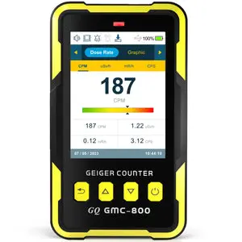

WebGMC
GMC-800 RADIATION MONITOR // WEBSERIAL LINK
DEVICE LINK REQUIRED
CONNECT A GQ GMC-800 DOSIMETER TO THIS COMPUTER WITH USB.
PRESS CONNECT TO OPEN THE SERIAL PORT, OR DEMO TO EXPLORE WITHOUT A DEVICE.

DEVICE
GQ GMC-800
USB
REQUIRED
BROWSER
CHECKING
BAUD
115200
WEBGMC LINK PROTOCOL
ESTABLISHING LINK...
- [ .. ] SERIAL PORT
- [ .. ] GMC-800 HANDSHAKE
- [ .. ] HISTORY CACHE
--
CPM
DEVICE
--
SERIAL
--
DEVICE ID
--
DATETIME
--